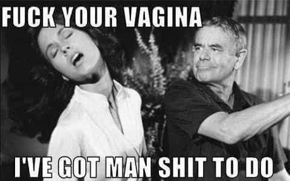

Jean Valjean is a MediaWiki developer and co-founder of Kings Wiki.


Since I first began editing Wikipedia in 2004, I’ve observed its devolution (paralleling that of RationalWiki) from a rapidly-growing collaboration run by slightly left-of-center secular humanists, who at least attempted to allow their critics’ viewpoints some semblance of fair coverage, into a much more blatantly and unapologetically SJW-dominated platform that stifles dissent.
Events like the Manning naming dispute decision, and the rise of radically feminist administrators like Alison (NSFW), not to mention the egregiously unjustified decision at Wikipedia:Miscellany for deletion/Wikipedia:WikiProject Seduction to “friend zone this project, without even a number close”, pretty much told us the writing was on the wall.
Wikipedia has always had its critics and malcontents, many of whom have made it onto the list of banned users. What I see now, though, is that even those in charge of Wikipedia don’t take the project seriously anymore. The more thoughtful, reasonable, unbiased users have been driven away from the project, so that there are few left but a handful of aspergic monomanics who mostly toil away unnoticed on obscure topics, while leftist ideologues document every new development in the evolution of rape culture. Meanwhile, trolls who don’t seem to actually have any sincere ideological ax to grind are the most actively involved in the day-to-day management of the project. High-ranking Wikipedians even admit that they toy with users for the lulz.
Probably the most honest, straightforward, and succinct guidebook to how Wikipedia actually works is Wikipedia:WikiSpeak. It notes that on Wikipedia, “conflict of interest” refers to “Editing an article on any subject that you actually understand. Uncommon, and sanctionable, expertise.”
Adding content to Wikipedia has always has been a frustrating, disappointing experience. It’s always been a challenge to make even high-quality content stick. And there have always been dickheads around whose attitudes have made the experience less pleasant. Yet, in recent years, it seems to have gotten worse.
As the number of volunteers willing to edit Wikipedia has been declining, there’s been increased interest in paid editing. If you build up a reputation for quality work, you can make hundreds or thousands of dollars per article writing on behalf of companies, organizations, people, etc. who want you to handle their Wikipedia reputation management. You just write the article, have one of your many on-call meatpuppets post it to Wikipedia for you, and collect your payment.
Plus you can have the client sign up to pay you an annual fee for continuing to edit the article on their behalf as needed. The reason the pay is so high is that only a few people are familiar enough with the labyrinthine complexities of Wikipedia rules and culture to be able to successfully navigate the process. There’s an alphabet soup of obscure Wikipedia policies, guidelines, and essays, each with its own acronym, that Wikipedians make reference to in discussions.
Theoretically, if you’re a paid editor, you’re supposed to publicly disclose your clients, your connection to them, and the edits you make on their behalf. But that’s sort of like accepting a girl’s invitation to tell her about your emotional vulnerabilities. It’s not going to end well. Just like she’ll lose respect, Wikipedia’s vigilantes will treat you with disrespect too.
A lot of Wikipedia administrators and their friends have made a hobby, or at least an amusing pastime, out of griefing those paid editors who diligently followed the rules by revealing their “conflicts of interest.” Some of their trolling techniques are straight out of the SJW playbook. For example, consider the action by perpetual drama instigator Jytdog, which I present as a case study.
Like a whiny girlfriend, Wikipedia’s SJW-style trolls distract from civilization-building by picking fights over nothing.
Paid editor Janweh64 has been reported to Administrators Noticeboard/Incidents for following Wikipedia’s exhortations to “be bold” and “ignore all rules” by moving to the mainspace an article draft that pretty much everyone agrees doesn’t contain anything objectionable. The beef people have with him is more procedural than substantive, making Janweh64 arguably in the right since supposedly “Wikipedia is not a bureaucracy“.
The wiki way is that if you have a problem with someone’s actions, you simply revert them with an edit summary explaining why, and then he can open a discussion if he wants to reinstate the changes he made. This tried-and-true method of wiki interaction, called the BOLD, revert, discuss cycle, allows problems to be fixed quickly and with minimal drama. It was by empowering individual users in this way that Wikipedia was able to leap ahead of Encyclopedia Britannica to become the most comprehensive encyclopedia in the world.
But SJWs, and those who take inspiration from their techniques, can never let a mistake (or a perceived mistake) go so easily. They’re like the women Sean Connery described who “can’t leave it alone. They want to have the last word. Then you give them the last word, but they’re not happy with the last word. They want to say it again and get into a really provocative situation.” Now that the “point and shriek” stage of the SJW-style attack is complete, Jytdog seeks to elicit an apology:
This path of acting aggressively in order to support your paid editing and then arguing fiercely to defend your aggressiveness is just going to lead to an indefinite block per NOTHERE. None of the volunteers here want to waste time any time at all dealing with this, which is just about you making money. Don’t you get that? What little patience people have, you exhaust by doing this. There are some paid editors who disclose what they are doing, and who “get it” and create no drama and they add value to WP. You could have been one of them, perhaps. Not what you are choosing… so be it. . . . .
The way out of this particular hole is just to say “Hey, I get it. I am sorry. I will not move my own paid articles to main space anymore, but will appeal through normal channels if I feel an AfC review was unfair. Again, my apologies for creating drama. It is important to me that I remain in good standing with everybody. ” Something like that. but mean it, and do it, and don’t do stuff that causes people to drag you here.
In response to this, Janweh64 actually bends over and gives him the apology:
In light of the new changes/clarification here by Jydog on March 13 to WP:COI, I will not move my own paid articles to main space anymore, but will appeal through normal channels if I feel an AfC review was unfair. My apologies for creating drama, again. It is important to me that I remain in good standing with everybody. I was truly unaware and not informed of these changes to this guideline specifically made after just a mere 20 days from my previous ANI, which was archived unclosed.
Janweh64 is making the exact statement that Jytdog just suggested he make, almost verbatim, while also pointing out in his own defense that Jytdog recently made a change to the rules without notifying him. Jytdog continues the attack, using the SJW “Reject and Transform” strategy in which the apology is promptly rejected because it is not the action, but the actor, that is the real target:
Janweh your response promises that this particular problem will end, which is a good thing but the rest of what you write there is argumentative and… horrible. The prior ANI thread from only two months ago was also called “Paid editor moving own drafts to mainspace” and in that thread several editors told you the same thing you have been told here.
In other words, every single editor who commented there and here wasted their time. That is what you just communicated. That you are going to treat WP guidelines and policies like “rulebooks” that you will exploit as hard as you can in order to make money here, and you will ignore community feedback.
That is nothing like what I advised you to write. You can let your comment stand or strike it, but you should be aware of how bad for you, your post was.

Finally, Endercase, a user who currently is under remedial “mentorship” (aka wiki-probation) and probably will end up getting banned at some point for fraternizing with unpersons and being too much of an outspoken wiki-dissident, chimes in and flips the script:
@Jytdog: This user is nothing like you appear to portray them in your above statement. “You can let your comment stand or strike it, but you should be aware of how bad for you, your post was.” They have declared COI and they are following policy/consensus to the best of their understanding. You have “won” here, I do not understand your apparent hostility nor your apparent failure to AGF. IMO this should have never been brought to AN/I (where it wastes our time) clearly (IMO) just having a discussion on the user’s talk page would have sufficed… I agree with your sentiment, just not the methods that have been used and are suggested to be used here.
Having been called out, Jytdog decides to back away rather than risk overreaching and exposing himself to counterattack. But of course, he doesn’t apologize for his own personal attacks (since that would just draw attention to the fact that he arguably broke the civility rules), and he gets in a few final digs before leaving, in keeping with the SJW principle that “They always double down when confronted with their lies”:
…this issue of moving their own paid articles to mainspace has arisen again. The first instance was semi-understandable. That this 2nd thread exists at all is hard to understand, as is the slipping back into the fierce arguing to justify marginal behavior. That this 2nd thread ended with with them making a wikilawyering argument half-justifying that this happened again, is bad for them. It is on the path where they lose.
I do agree that this thread should be closed. I still hope that Janweh has the good sense to strike and make a more clueful statement before that happens, but if they choose to let it stand, so be it.
Janweh64 is thus being once again blamed for provoking “drama,” and is being extended one last invitation to engage in some more ritual self-abasement that can later be used against him, in the vein of, “Janweh64 even admitted last time that he was in the wrong, but instead of changing his behavior after being warned twice, now he has made it necessary to open up a third thread. When will we finally say, enough is enough?”

Hire some meatpuppets, and do some undisclosed paid Wikipedia editing, and your journey toward the dark side will be complete.
What may eventually happen is that Janweh64 will get fed up and become an undisclosed paid editor (as he should have done from the beginning). His growing awareness of the inequity is evident in his comment, “you are punishing me for declaring my COI religiously when 1000s of others are right now editing with no declaration.” He’s beginning to unplug and take the wiki-red pill, as he sees how counterproductive it is to be the nice guy who follows the rules. How long before he tires of seeing the bad boys get all the wiki-pussy while he wiki-masturbates?
Jytdog has been called out before for, interestingly enough, “trying to own the discussion at Talk:Jews” and a cursory review of the archives reveals that the same group of defenders shows up whenever he gets accused of anything. This is part of a larger pattern in which users who are members of the same clique as the administrators get forgiven for their “innocent mistakes,” while others get banned however abjectly they apologize for their trivial (or imaginary) transgressions.
Like prosecutors, the administrators interpret the rules broadly to proscribe their adversaries’ behavior, and interpret rules narrowly that contain exceptions the accused might cite in their defense. They demand strict application of rules when doing so favors their side; but call for flexibility to depart from the rules when that would suit their purpose instead. Meanwhile, in accordance with the SJW tactic “Isolate and Swarm”, users like Endercase who have an inconvenient habit of pointing out that the emperor wears no clothes get marked for elimination.
It used to be that, despite Wikipedia’s flaws, it was still a place where you could have some useful accomplishments as a content creator. But now, while spergs continue to quietly build about 90 percent of Wikipedia’s useful content, outside of areas like biology, science, medicine, the War of 1812, etc., Wikipedia has mostly devolved into a playground for entryist SJW trolls. Meanwhile, the donations continue rolling in from well-meaning chumps.
Nonetheless, Wikipedia has a lot of useful infrastructure, built up by many unsung heroes in the MediaWiki development community. So I would say, the best strategy is that (1) if you want to make money as a paid editor, go ahead and take advantage of this “enjoy the decline” situation through undisclosed conflict-of-interest editing; and (2) if you like creating content and have nothing better to do, go ahead and add articles to Wikipedia, but save copies of your content for reposting to Infogalactic, Kings Wiki, or whatever other niche wiki would be appropriate, in the event of deletion. And of course, (3) munch popcorn and enjoy watching the lulzfest that is Wikipedia’s kafkaesque online dystopia, if you’re sick enough to be into that kind of thing.
Read More: Introducing Kings Wiki, A Wikipedia For Us